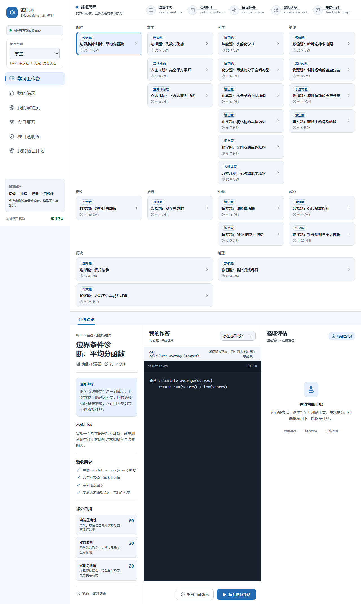
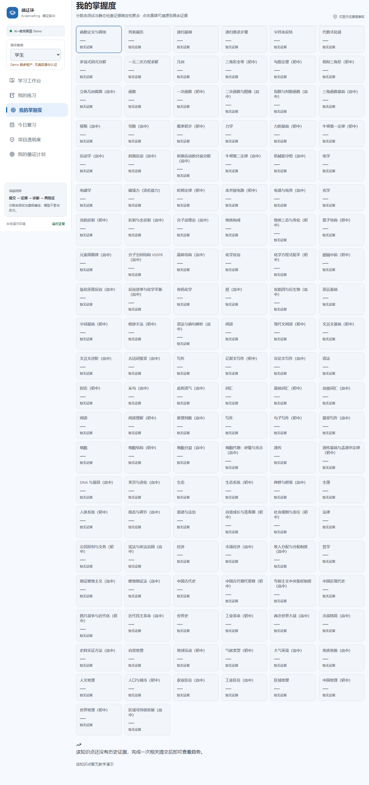
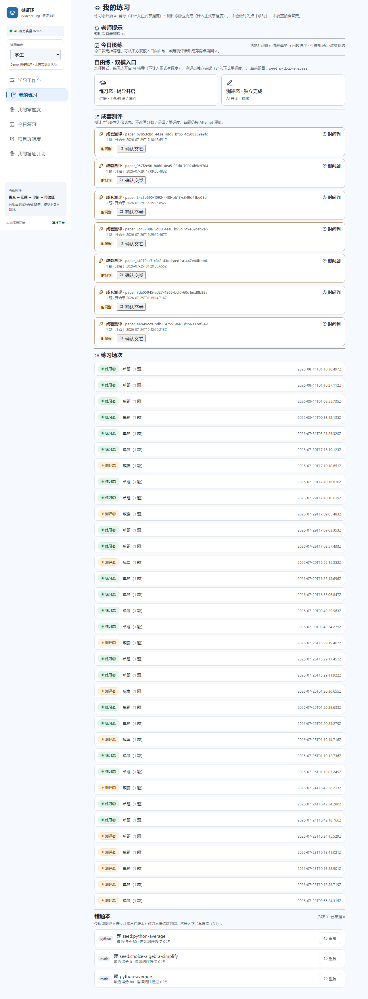
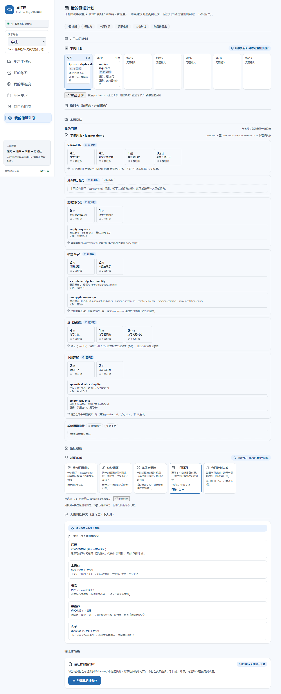
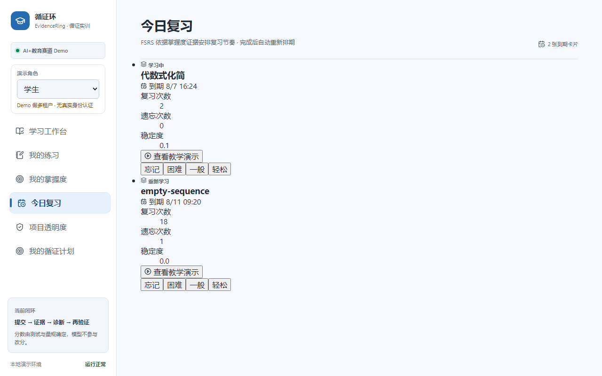
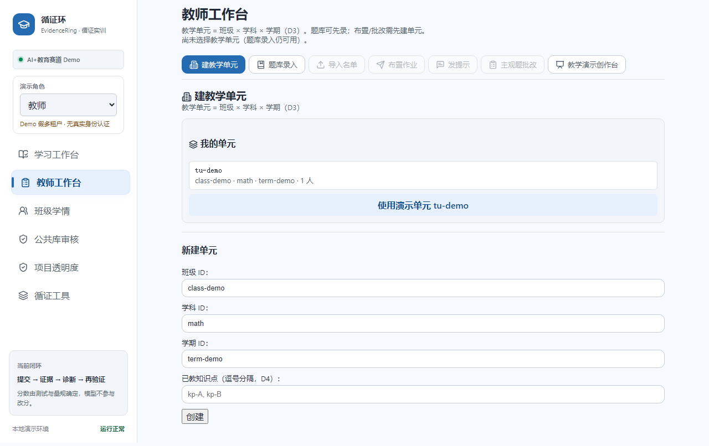
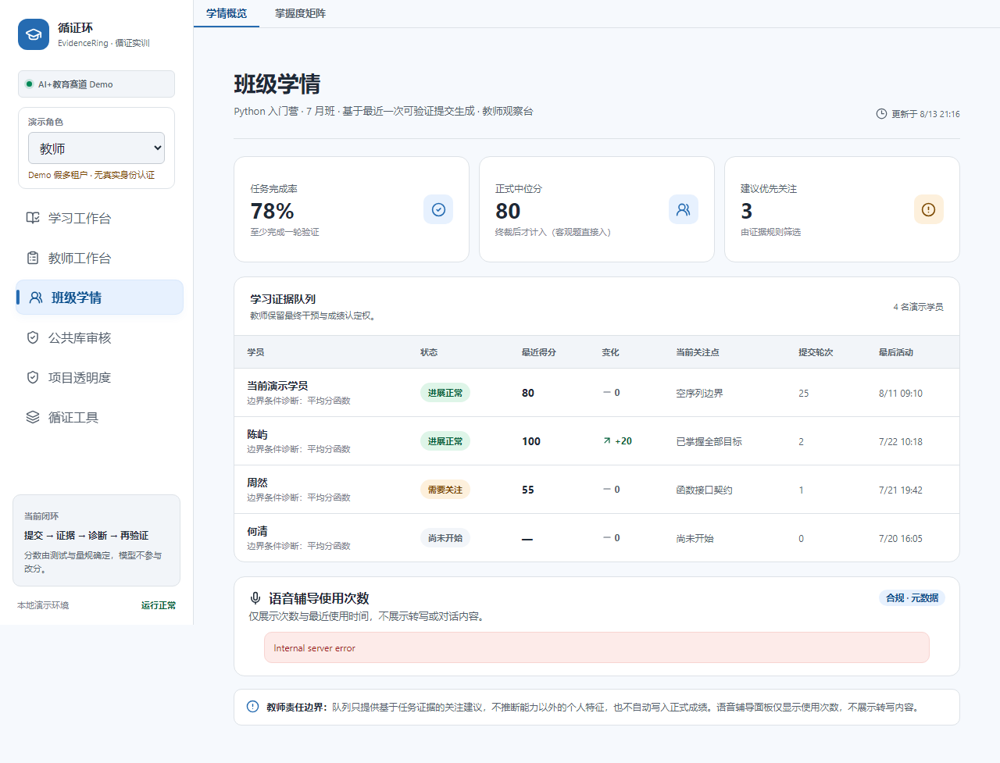
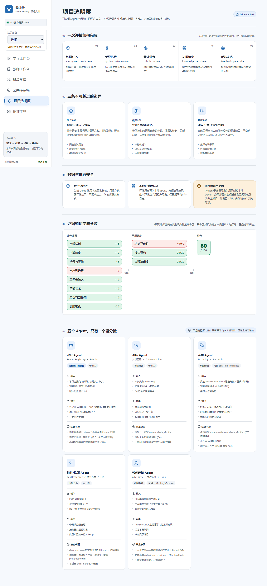
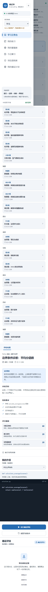
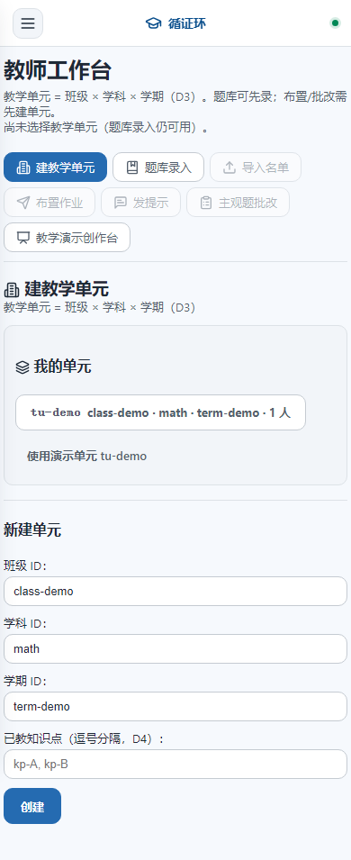

用可验证证据驱动评分、诊断和再训练
分数由测试与量规确定，模型不参与改分 · 每条结论旁边站着它的证据
提交 → 受限运行 → 量规评分 → 知识匹配 → 反馈生成

诊断 → 干预 → 再练，循证环前端连通

FSRS 到期 ∩ 依赖薄弱 ∩ 已教进度

7 日计划 · 模拟考 · 周报 · 成就 · 作品集

ts-fsrs 5.4 调度 · 仅连续测评态判对才移出活跃本

选/建单元 → 题库 → 名单 → 布置 → 批改

概览（完成率/中位分）+ 掌握度矩阵（知识点×学生）

每个 Agent 的职责、输入输出、是否触碰评分

≤980px 转抽屉 · 桌面/平板/手机同一份场景文档

侧栏抽屉 · 响应式导航

教师工作台 · 移动端
① 证据优先 — 分数只来自 Runner 产出的 Evidence，LLM 不得改分
② 题型切分 — 按题型不按学科，7 引擎 × 9 学科同构
③ 双聚合根隔离 — MasteryProfile（硬事实）∥ LearnerNarrative（软语义）
④ Provenance 必填 — evidence / llm_inference / self_report / teacher_annotation
⑤ 多模态红线 — feature flag 一键关，主评分闭环不因语音回归
⑥ 评分路径零耦合 — 评分模块不读演示表，架构测试守护